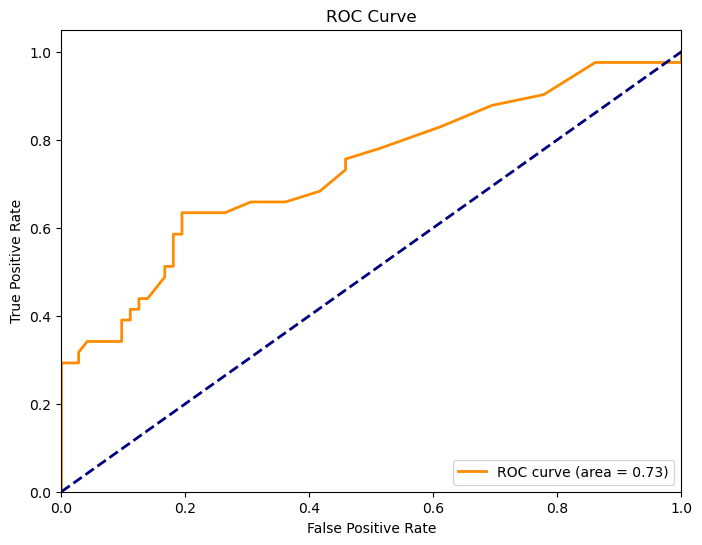

AUC là viết tắt của “Area Under the ROC Curve” trong tiếng Anh, dịch sang tiếng Việt là “Diện tích dưới đường cong ROC”. Đây là một phép đo quan trọng trong đánh giá hiệu suất của mô hình phân loại (classifier) trong trường hợp binary classification (phân loại nhị phân).
Để hiểu AUC, hãy cùng nhau xem xét đến đường cong ROC (Receiver Operating Characteristic curve). ROC curve biểu diễn sự tương quan giữa tỷ lệ True Positive Rate (TPR) và tỷ lệ False Positive Rate (FPR) của mô hình phân loại, khi ngưỡng phân loại thay đổi từ 0 đến 1.
True Positive Rate (TPR), còn gọi là Sensitivity hoặc Recall, đo lường tỷ lệ các trường hợp positive mà mô hình dự đoán chính xác.
False Positive Rate (FPR) đo lường tỷ lệ các trường hợp negative bị phân loại sai (tức là dự đoán nhầm thành positive).
AUC là diện tích nằm dưới đường cong ROC và nó thể hiện khả năng của mô hình phân loại phân biệt giữa hai lớp positive và negative. AUC càng lớn thì mô hình càng có khả năng phân loại tốt hơn, với AUC = 1 thể hiện mô hình hoàn hảo, trong khi AUC = 0.5 chỉ ra mô hình không khác biệt so với một dự đoán ngẫu nhiên.
AUC là một phép đo định lượng và phổ biến trong đánh giá hiệu suất của các mô hình phân loại như Logistic Regression, Support Vector Machines (SVM), Random Forest, Neural Networks, và nhiều mô hình khác.
import numpy as npimport pandas as pdfrom sklearn.metrics import roc_curve, aucimport matplotlib.pyplot as pltaSAH = pd.read_excel("aSAH.xlsx")y_true_str = aSAH['outcome']y_pred = aSAH['s100b']# Create a dictionary to map string labels to binary labelslabel_mapping = {"Poor": 1, "Good": 0}# Map true labels to binary labelsy_true = [label_mapping[label] for label in y_true_str]# Tính đường cong ROC và AUCfpr, tpr, thresholds = roc_curve(y_true, y_pred)roc_auc = auc(fpr, tpr)# Vẽ biểu đồ AUCplt.figure(figsize=(8, 6))plt.plot(fpr, tpr, color='darkorange', lw=2, label='ROC curve (area = %0.2f)'% roc_auc)plt.plot([0, 1], [0, 1], color='navy', lw=2, linestyle='--')plt.xlim([0.0, 1.0])plt.ylim([0.0, 1.05])plt.xlabel('False Positive Rate')plt.ylabel('True Positive Rate')plt.title('ROC Curve')plt.legend(loc="lower right")plt.show()

Liên hệ AUC và thống kê Mann-Whitney
Thống kê Mann-Whitney (U-test):
Giả sử bạn có hai nhóm dữ liệu độc lập, \(X\) và \(Y\), với kích thước lần lượt là \(n_x\) và \(n_y\). Để tính U-statistic, bạn cần xếp hạng dữ liệu trong mỗi nhóm và tính tổng các xếp hạng trong nhóm \(X\), ký hiệu là \(R_X\). Sau đó, U-statistic được tính bằng công thức:
Giả sử bạn có hai mô hình phân loại và đã tính được các xác suất dự đoán của chúng trên tập dữ liệu kiểm tra. Để thực hiện kiểm định DeLong, bạn cần tính U-statistic và phương sai của U-statistic (Var(U)) như đã giải thích trước đó.
Tiếp theo, để tính Z-score, bạn cần có AUC của hai mô hình (\(AUC_1\) và \(AUC_2\)) và Var(U) như sau:
\[ Z = \frac{AUC_1 - AUC_2}{\sqrt{\text{Var}(U)}} \]
Sau đó, sử dụng Z-score để tính p-value, và nếu p-value nhỏ hơn mức ý nghĩa đã chọn (thường là 0.05), bạn có thể kết luận rằng có sự khác biệt đáng kể giữa AUC của hai mô hình.
Công thức tính khoảng tin cậy (confidence interval) cho AUC dựa trên phương pháp DeLong như sau:
Giả sử bạn đã tính được U-statistic (U) và Var(U) từ kiểm định DeLong, thì khoảng tin cậy 95% cho AUC sẽ được tính bằng công thức sau:
AUC là diện tích dưới đường cong ROC đã tính từ mô hình phân loại và tập dữ liệu.
Var(U) là phương sai của U-statistic, tính từ kiểm định DeLong.
\(z_{\alpha/2}\) là giá trị thống kê từ phân phối chuẩn tương ứng với mức đáng tin cậy 95%. Với mức đáng tin cậy 95%, \(\alpha = 0.05\), nên \(z_{\alpha/2}\) tương ứng với giá trị thống kê 1.96.
Thuật toán Sun và Xu
Thuật toán được đề xuất bởi Sun và Xu trong bài báo “Fast Implementation of DeLong’s Algorithm for Comparing the Areas Under Correlated Receiver Operating Characteristic Curves” cung cấp một cách tính toán hiệu suất và nhanh chóng để tính phương sai của sự khác biệt giữa diện tích dưới đường cong ROC (AUC) bằng phương pháp DeLong cho các đường cong ROC tương quan. Thuật toán của họ giảm đáng kể độ phức tạp tính toán so với phương pháp DeLong gốc, làm cho nó phù hợp cho các tập dữ liệu lớn.
Dưới đây là tổng quan về các bước của thuật toán:
Đầu vào: Bạn có hai đường cong ROC tương quan (ví dụ, từ hai mô hình khác nhau), cùng với tỷ lệ dương tính thật sự (TPR) và tỷ lệ giả mạo thật sự (FPR) cho mỗi đường cong.
Tính U-statistic: Tính U-statistic bằng cách sử dụng công thức: \[ U = n_1 \cdot n_2 + \frac{n_1 \cdot (n_1 - 1)}{2} - \sum_{i=1}^{n_1} R_i \] trong đó \(n_1\) và \(n_2\) là số điểm dữ liệu trong hai đường cong, và \(R_i\) đại diện cho hạng của điểm thứ \(i\) trong đường cong đầu tiên.
Tính phương sai: Tính phương sai của U-statistic bằng cách sử dụng công thức: \[ \text{Var}(U) = \frac{n_1 \cdot n_2 \cdot (n_1 + n_2 + 1) \cdot \sigma_{12}^2 + n_1 \cdot (n_1 - 1) \cdot \sigma_1^2 + n_2 \cdot (n_2 - 1) \cdot \sigma_2^2}{n_1 \cdot n_2} \] trong đó \(\sigma_1^2\) và \(\sigma_2^2\) là phương sai của ước tính AUC cho hai đường cong, và \(\sigma_{12}^2\) là hiệp phương sai giữa các ước tính AUC.
Tính Z-score và p-value: Tính Z-score bằng cách sử dụng công thức: \[ Z = \frac{AUC_1 - AUC_2}{\sqrt{\text{Var}(U)}} \] Sau đó, tính giá trị p-value sử dụng Z-score.
Hiểu kết quả: Dựa vào giá trị p-value tính toán được và một ngưỡng ý nghĩa đã chọn (ví dụ, 0.05), bạn có thể xác định xem sự khác biệt trong AUC giữa hai mô hình có ý nghĩa thống kê hay không.
Thuật toán này cung cấp một cách tính toán phương sai hiệu suất khác biệt hiệu quả hơn, đồng thời xem xét đến sự tương quan giữa các đường cong. Điều này rất hữu ích khi làm việc với tập dữ liệu lớn hoặc thực hiện nhiều so sánh. Ưu điểm chính là nó giảm độ phức tạp so với phương pháp DeLong gốc, làm cho nó thích hợp hơn cho các ứng dụng thực tế.
def midrank(x): J, Z =zip(*sorted(enumerate(x), key=lambda x:x[1])) J =list(J) Z =list(Z) Z.append(Z[-1]+1) N =len(x) T = np.zeros(N) i =1while i <= N: a = i j = awhile Z[j-1] == Z[a-1]: j = j +1 b = j -1for k inrange(a, b+1): T[k-1] = (a + b) /2 i = b +1 T2 = np.zeros(N) T2[J] = Treturn T2def fastDeLong(samples):# %FASTDELONGCOV# %The fast version of DeLong's method for computing the covariance of# %unadjusted AUC.# %% Reference:# % @article{sun2014fast,# % title={Fast Implementation of DeLong's Algorithm for Comparing the Areas Under Correlated Receiver Operating Characteristic Curves},# % author={Xu Sun and Weichao Xu},# % journal={IEEE Signal Processing Letters},# % volume={21},# % number={11},# % pages={1389--1393},# % year={2014},# % publisher={IEEE}# % }# %% [aucs, delongcov] = fastDeLong(samples)# %%# % Edited by Xu Sun.# % Homepage: https://pamixsun.github.io# % Version: 2014/12# %%if np.sum(samples.spsizes) != samples.ratings.shape[1] orlen(samples.spsizes) !=2:assertFalse, 'Argument mismatch error' z = samples.ratings m, n = samples.spsizes x = z[:, :m] y = z[:, m:] k = z.shape[0] tx = np.zeros([k, m]) ty = np.zeros([k, n]) tz = np.zeros([k, m + n])for r inrange(k): tx[r, :] = midrank(x[r, :]) ty[r, :] = midrank(y[r, :]) tz[r, :] = midrank(z[r, :]) aucs = np.sum(tz[:, :m], axis=1) / m / n -float(m +1.0) /2.0/ n v01 = (tz[:, :m] - tx[:, :]) / n v10 =1.0- (tz[:, m:] - ty[:, :]) / m sx = np.cov(v01) sy = np.cov(v10) delongcov = sx / m + sy / nreturn aucs, delongcov, v01, v10
import numpy as npimport pandas as pdaSAH = pd.read_excel("aSAH.xlsx")# Create synthetic predicted probabilities for two modelsn_samples = aSAH.shape[0]m =41# Number of samples with label '1'n = n_samples - m # Number of samples with label '0'# Generate random predicted probabilitiesaSAH = aSAH.sort_values('outcome', ascending=False)predictions_model1 = np.array(aSAH['s100b'])predictions_model2 = np.array(aSAH['wfns'])# Create a 'samples' object with the generated predictionsclass Samples:passsamples = Samples()samples.ratings = np.vstack((predictions_model1, predictions_model2))samples.spsizes = (m, n)# Call the fastDeLong functionaucs, delongcov, v01, v10 = fastDeLong(samples)# Print the resultsprint("AUCs:", aucs)print("DeLong Covariance:", delongcov)
Kiểm định sự khác biệt AUC của 2 mô hình theo Delong
import scipydef calpvalue(aucs, sigma): l = np.array([[1, -1]]) z = np.abs(np.diff(aucs)) / np.sqrt(np.dot(np.dot(l, sigma), l.T)) pvalue =2* (1- scipy.stats.norm.cdf(z, loc=0, scale=1))return pvalueAUC_DS, C, _, _ = fastDeLong(samples)p_value = calpvalue(AUC_DS, C)[0][0]print(f"AUC Model 1: {AUC_DS[0]:.3f}")print(f"AUC Model 2: {AUC_DS[1]:.3f}")print("P-value for DeLong test:", p_value)# So sánh AUC của hai mô hìnhalpha =0.05if p_value < alpha:print("Có sự khác biệt đáng kể giữa AUC của hai mô hình.")else:print("Không có sự khác biệt đáng kể giữa AUC của hai mô hình.")
AUC Model 1: 0.731
AUC Model 2: 0.824
P-value for DeLong test: 0.02717578222918804
Có sự khác biệt đáng kể giữa AUC của hai mô hình.
So sánh AUC của hai mô hình bằng bootstrap
import numpy as npfrom sklearn.metrics import roc_auc_score# Tạo dữ liệu mẫu với độ dài chuỗi y_true là 1000# Tính AUC cho hai mô hìnhauc_model1 = roc_auc_score(y_true, predictions_model1)auc_model2 = roc_auc_score(y_true, predictions_model2)# Thực hiện bootstrap để tính khoảng tin cậy 95% cho AUC của cả hai mô hìnhn_iterations =1000# Số lượng lần lấy mẫu bootstrapn_size =len(y_true) # Số lượng phần tử trong chuỗi y_trueauc_scores_model1 = []auc_scores_model2 = []for _ inrange(n_iterations):# Lấy ngẫu nhiên mẫu từ dữ liệu với replacement indices = np.random.randint(0, n_size, n_size) y_true_bootstrap = np.array(y_true)[indices] y_pred_bootstrap_model1 = predictions_model1[indices] y_pred_bootstrap_model2 = predictions_model2[indices]# Tính AUC cho mẫu lấy ra từ dữ liệu bootstrap cho hai mô hình auc_score_model1 = roc_auc_score(y_true_bootstrap, y_pred_bootstrap_model1) auc_score_model2 = roc_auc_score(y_true_bootstrap, y_pred_bootstrap_model2) auc_scores_model1.append(auc_score_model1) auc_scores_model2.append(auc_score_model2)# Tính khoảng tin cậy 95% cho AUC cho cả hai mô hìnhlower_bound_model1 = np.percentile(auc_scores_model1, 2.5)upper_bound_model1 = np.percentile(auc_scores_model1, 97.5)lower_bound_model2 = np.percentile(auc_scores_model2, 2.5)upper_bound_model2 = np.percentile(auc_scores_model2, 97.5)print(f"AUC Model 1: {auc_model1:.3f} (95% CI: [{lower_bound_model1:.3f}, {upper_bound_model1:.3f}])")print(f"AUC Model 2: {auc_model2:.3f} (95% CI: [{lower_bound_model2:.3f}, {upper_bound_model2:.3f}])")# So sánh khoảng tin cậy của AUC của hai mô hìnhif lower_bound_model1 > upper_bound_model2 or lower_bound_model2 > upper_bound_model1:print("Có sự khác biệt đáng kể giữa AUC của hai mô hình.")else:print("Không có sự khác biệt đáng kể giữa AUC của hai mô hình.")
AUC Model 1: 0.523 (95% CI: [0.403, 0.638])
AUC Model 2: 0.506 (95% CI: [0.383, 0.613])
Không có sự khác biệt đáng kể giữa AUC của hai mô hình.
Tính khoảng tin cậy AUC sử dụng phương pháp Delong
from scipy.stats import normdef calculate_auc_ci(y_true, y_score,alpha =0.05): total_sample =len(y_true) m =sum(y_true) n = total_sample - m# Zip the lists together zipped_data =list(zip(y_true, y_score))# Sort the zipped data based on labels in decreasing order sorted_data =sorted(zipped_data, key=lambda x: x[0], reverse=True)# Unzip the sorted data to get separate sorted values and labels sorted_y_true, sorted_y_score =zip(*sorted_data)# Create a 'samples' object with the generated predictionsclass OtherSamples:pass samples = OtherSamples() samples.ratings = np.vstack((sorted_y_score, sorted_y_score)) samples.spsizes = (m, n) auc, auc_cov,_,_ = fastDeLong(samples) auc = auc[0] var_U = auc_cov[0,0] z_score = norm.ppf(1- alpha /2) lower_bound = auc - z_score * np.sqrt(var_U) upper_bound = auc + z_score * np.sqrt(var_U)return auc, var_U, lower_bound, upper_bound
auc_model, _, lower_bound, upper_bound = calculate_auc_ci(y_true, y_pred)print(f"AUC: {auc_model:.3f}")print(f"95% Confidence Interval for AUC using bootstrap method: [{lower_bound:.3f}, {upper_bound:.3f}]")
AUC: 0.731
95% Confidence Interval for AUC using bootstrap method: [0.630, 0.833]
Tính khoảng tin cậy AUC sử dụng phương pháp Bootstrap
import numpy as npimport matplotlib.pyplot as pltfrom sklearn.metrics import roc_auc_score, roc_curve# Tính AUC cho mô hình ban đầuauc_model = roc_auc_score(y_true, y_pred)# Số lượng lần lấy mẫu (bootstrap iterations)n_iterations =1000# Số lượng mẫu lấy ra từ dữ liệu ban đầu trong mỗi lần lấy mẫun_size =len(y_true)# Tạo mảng để lưu kết quả AUC từ các lần lấy mẫuauc_scores = []for _ inrange(n_iterations):# Lấy ngẫu nhiên mẫu từ dữ liệu với replacement indices = np.random.randint(0, n_size, n_size) y_true_bootstrap = np.array(y_true)[indices] y_pred_bootstrap = y_pred[indices]# Tính AUC cho mẫu lấy ra từ dữ liệu bootstrap auc_score = roc_auc_score(y_true_bootstrap, y_pred_bootstrap) auc_scores.append(auc_score)# Tính khoảng tin cậy 95% cho AUClower_bound = np.percentile(auc_scores, 2.5)upper_bound = np.percentile(auc_scores, 97.5)print(f"AUC: {auc_model:.3f}")print(f"95% Confidence Interval for AUC using bootstrap method: [{lower_bound:.3f}, {upper_bound:.3f}]")
AUC: 0.731
95% Confidence Interval for AUC using bootstrap method: [0.624, 0.824]